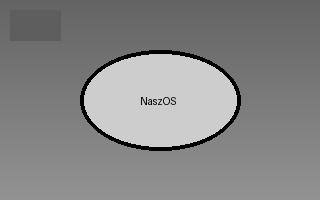

1. srcset z opisami w: powinien byc kolorowy obrazek rgb.png (nie szary).

2. srcset z opisami x: powinna byc paleta (1x), nie szary (2x).
3. picture: WebP pomijany, potem GIF (animowany obraz.gif).
4. picture bez pasujacego source: zdjecie.jpg z img.
5. Skrypt po 1 s ustawia srcset (jak dynatrace): ma byc alfa.png, pobrany raz.